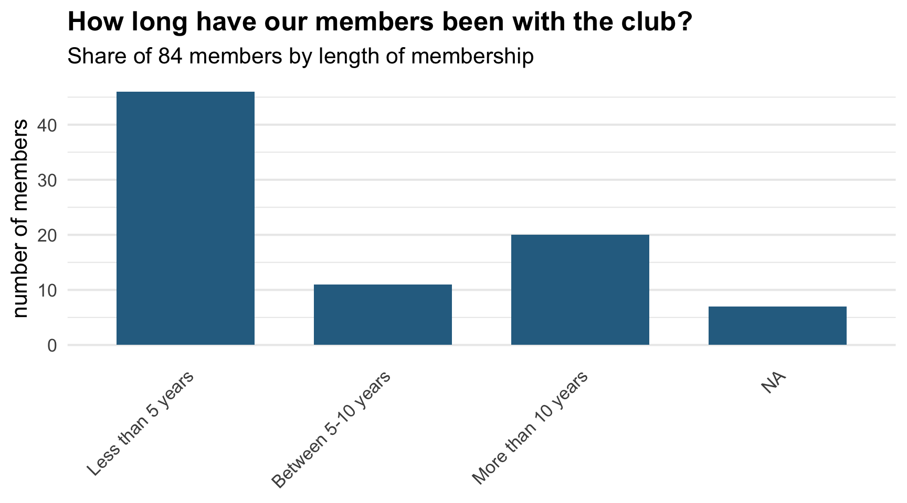

Member Demographics
Welcome Back
Member Space Access
Membership Composition
General Takeaways Caring and service professions dominate. Education and healthcare together make up roughly a third of the group. A strong creative and design contingent sits alongside a solid technical and business contingent. Mixed life stages. There are several retirees, people on maternity leave, full-time parents or homemakers, and current students, as well as people mid-career. Public sector connections (government, City of Richmond, WorkSafeBC, UBC, KPU, schools) are common.
Length of Membership
